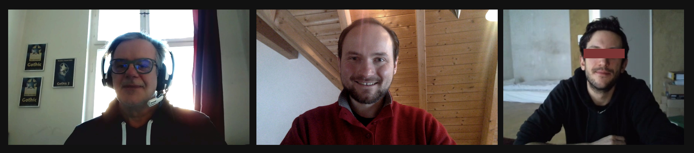
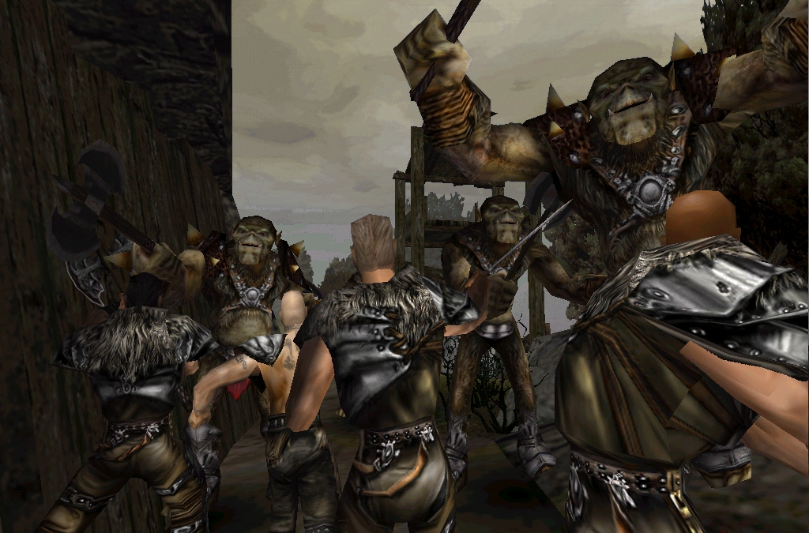
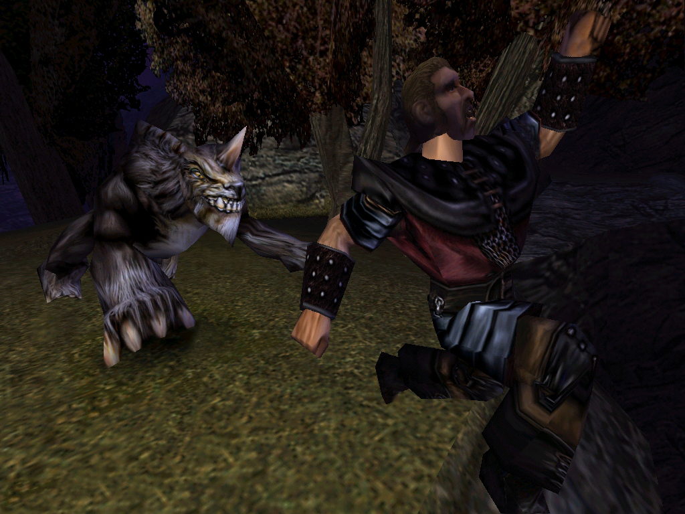

../ Ein Interview mit Tom Putzki
zum 20. Jubiläum von GOTHIC - Part 2
von Phoenix Tales
Audio: TomPutzki_PhoenixTales_20thAnniversary_Part2.ogg
Interview Transkript
Florian: Welcome back.
Der zweite Part der Fragen bezieht sich ein bisschen mehr inhaltlich auf die Gothic Story, die ursprünglich geplant war. Und ich weiß, du warst jetzt vielleicht nicht so stark [in diesen Part] involviert, aber du hast es ja auch der Presse gegenüber immer so kommuniziert und deswegen dachten wir, vielleicht erinnerst du dich an manche Sachen noch.
Tom: Kann sein, kann nicht sein, wir werden sehen!
Florian: Und zwar, in'nem ziemlich frühen Interview, wurde dir die Frage gestellt, ob denn der Spieler, also der Held, aus irgendeinem Grund in die Barriere geworfen wurde, weil ihr immer kommuniziert habt, dass er unschuldig da rein geworfen worden wäre. Und da hast du dem Journalisten gesagt, dass es da auf jedenfall einen Grund gibt und dass das aber der Spieler im Laufe der Story herausfinden würde.
Tom: Okay.
Florian: Und ja, aber man hat nichts darüber herausgefunden später.
Tom: Ha.. Naja, wir hatten schon vor.. ach was weiß ich, ich glaube, der Gedanke war eine kleine Verschwörung oder sowas. Der Spieler ist irgendwem auf die Füße getreten und deswegen wurde er schlicht und ergreifend in diese Sträflingskolonie geworfen. Hätte sein können: Er ist einer Frau eines Verheirateten zu nahe gekommen. Sowas in der Richtung. Das waren die Gedanken.
Oliver: Auch eher so ein relativ banales Verbrechen hätte das sein sollen?
Tom: Ja, ja genau das war ja unsere Intention, das auch darzustellen. Du wirst halt für jeden Scheiß da reingeschmissen, weil der König halt das Erz braucht. Punkt. Deswegen auch diese Geschichte mit dem Apfelklau, die ja glaube ich im Comic entsprechend aufgegriffen wurde. Das war auch eine unserer ganz frühen Ideen.
Oliver: Ihr habt das auch irgendwo mal gesagt: Der Spieler ist im Prinzip 'n Hans-Wurst, eigentlich ein Niemand, [unverständlich (2:20)], also das habt ihr auch dann immer konsequent durchgezogen. Der hatte nie ne Bedeutung, der war halt einfach irgendne Wurst, der wie viele andere für irgendne Nichtigkeit in die Barriere geflogen ist.
Tom: Genau das.
Florian: Es gibt da noch so Design-Dokumente zu dem Sequel von Stefan Nyul und Alex Brüggemann und da gibts auch so'n paar Passagen über die vier Freunde. Und da wurde auch beschrieben, aus welchem Grund die jeweils in die Barriere geworfen wurden. Und bei Lester war das tatsächlich was du gesagt hast, der hat irgendwie mit der Frau von dem Statthalter von Khorinis geschlafen oder so und ist dann reingeworfen worden. Gorn hat glaube ich Soldaten der Armee umgebracht und Milten war halt dieser Apfeldieb [und Deserteur].
Tom: Ja. Diego hatte bestimmt gute Gründe warum er im Knast war. [lacht]
Oliver: Weil du gerade den Comic erwähnt hast. Die Idee zu dem Comic, er ist ja Teil dieser Cross-Promotion Marketing Aktion gewesen, hattest du diese Idee zum Comic oder wer hatte diese Idee? Und wie viel Kontrolle hattet ihr da über die Story und auch das Artdesign oder habt ihr das einfach komplett outgesourced?
Tom: Das wurde überhaupt nicht von uns gemacht, das war die Kern-Kompetenz unseres Publishers, von Egmont Interactive, die ja die Interactive Tochter des Egmont Ehapa Comic Verlages waren. Und da kannten sie sich natürlich aus. Das heißt, die kamen auch mit Comiczeichnern an, mit Leuten, die sich damit auskannten. Wir haben natürlich trotzdem mit den entsprechenden Kreativen gesprochen, haben ihnen gesagt, wo wir das sehen, wie wir das sehen usw. usf. Natürlich haben wir da Einfluss genommen und Input dazu gegeben und die haben sich auch größtenteils, denke ich, daran gehalten.
Oliver: Okay, also ihr hattet diese Idee, z.B. Miltens Apfelklau, diesen Plot hattet ihr so vorgegeben oder auch diese [... unverständlich ...] aus der Armee und der Orkkrieg?
Tom: Ja ja, genau.
Oliver: Wo haben die Comiczeichner da eventuell, wenn du dich an was erinnern kannst, so ein bisschen kreative Freiheit sich genommen?
Tom: Sorry, das kann ich dir beim besten Willen nicht sagen. Das weiß ich einfach nicht mehr.
Florian: Dann zurück zur Story. Wenn wir da ein bisschen weiterspringen, da findet ja irgendwann diese große Anrufung des Schläfers statt. Und daraufhin fällt Y'Berion ohnmächtig zu Boden. Und ursprünglich gab es so einen Trank, der hieß glaub ich YBerionPotion, also so ne Art Medizin für Y'Berion, die aber nie im Spiel benutzt wurde. Da gabs immer so die Theorie von Fans: Hätte vielleicht Y'Berion doch noch überleben sollen oder warum war dieser Trank da im Spiel? Weil später bringt man ihm nur solche Kräuter und die bringen nichts mehr und dann stirbt er doch. Weißt du da noch was?
Tom: Also ich kann mir schon vorstellen, dass wir da vor hatten, noch ne Möglichkeit, ne Hintertür einzubauen mit diesem Trank oder sowas, aber warum das jetzt letztendlich... ne, weiß ich nicht mehr. Also wenn dann Mike. Wenn der dazu nichts sagen kann, dann kann ich dazu erst recht nichts sagen.
Florian: Ja, der wusste das leider auch nicht mehr.
Oliver: In den Spielskripten gibts zumindest noch ein auskommentiertes Dialogfragment, was Y'Berion aufgesagt hätte, wenn er nochmal aus seinem Koma zurückgekommen wäre. Das wäre einfach nur gewesen [sinngemäß]: O Gott, der Schläfer ist böse, erweckt den ja nicht und dann wäre er trotzdem tot umgefallen, laut der Skripte. Das ist aber was das ihr einfach auskommentiert habt und ich kanns mir rückblickend eigentlich nur erklären, dass ihr nicht nen zu großen Spoiler da [... unverständlich ...] wolltet, ala: Der Schläfer ist der Endgegner.
Florian: Ja, oder es war halt einfach weil es [technisch] kompliziert war, den Y'Berion irgendwie wieder aufwachen zu lassen, weil das ist ja blöd wenn der dann "aufsteht", anstatt dass er dann im Liegen irgendwie spricht, das sieht ja dann doof aus.
Tom: Also ich weiß wirklich noch, dass eine Menge Ideen gerade in den letzten Monaten der Entwicklung einfach gestrichen wurden aus Zeitgründen. Weil wir mussten... nach einer Entwicklungszeit, zu dem Zeitpunkt von 3 Jahren, mussten wir jetzt einfach zu Potte kommen. Es ging nicht anders. Sonst wär kein Geld mehr da gewesen, kein Vertrauen, kein gar nichts. Und deswegen wurde damals einfach vieles, was ursprünglich gedacht war, gestrichen. Einfach aus Zeitgründen.
Florian: Ja. Die Story war damals ja so aufgebaut um solche "Story Events"...
Tom: Wir hatten genügend Ideen, um das Spiel noch ein Jahr weiterzuentwickeln. Aber es musste einfach fertig werden. Es ging nicht anders.
Florian: Ja... Dann zumindest, die eine Sache, weil da hast du auch selber im Interview was dazu gesagt. Und zwar dieser OrcAssault. Da hast du gesagt: "Am Ende eines der Kapitel kommen zum Beispiel die Orks an die Oberfläche und übernehmen eines der Lager." Das war so eine Sache, die nicht mehr drin war. Und wir fragen uns nur, welches Lager hätten die denn da übernehmen sollen?
Tom: Also ich weiß, dass nicht das Psioniker-Lager gemeint war. Das weiß ich. Klingt für mich logisch: Orks, Höhle, Neues Lager.
Oliver: Also es gibt auch nen Promo-Screenshot [mittlerweile sind von Ralf über Don-Esteban noch ein paar mehr veröffentlicht worden. - Flosha], wo man diese Söldner des Neuen Lagers gegen so ne Orkhorde kämpfen sieht am Eingang des Neuen Lagers. Das da vielleicht mal so gestellt war, aber ja, diese Szene hats halt im Spiel nie gegeben und auch das ganze Event drum herum wurde wahrscheinlich komplett gecuttet.
Tom: Ja, also wie gesagt, klingt für mich jetzt sehr nach Neuem Lager, dass wir das so geplant hatten.
Florian: Also es gab so verschiedene Theorien. Unter anderem hatten die Leute halt immer gedacht: Wahrscheinlich das Alte Lager, weil in Gothic 2 wird das ja so dargestellt, dass das dann von den Orks belagert wird, dass das vielleicht so'n Überbleibsel ist. Aber andererseits: Mike hatte auch so die Ahnung, dass es vielleicht eher über die Freie Mine stattgefunden hätte, dass die Orks aus den Höhlen, über die Freie Mine dann kommen.
Tom: Ja, ja, ganz genau.
Florian: Und dann vielleicht das Neue Lager überfallen. Ja, das macht Sinn... Und dann dieses aller letzte Story Event, davon ist in den Spieldaten fast gar nichts mehr übrig, das heißt "Nemesis". Da hat Mike auch nur gemeint, das hätte irgendwie mit dem Wahnsinn zu tun haben sollen, das alle wahnsinnig werden und sich gegenseitig umbringen oder so.
Tom: Oh, also Wahnsinn...
Florian: Durch die Einflussnahme des Schläfers, die immer größer wird...
Tom: Ja, ja ja. Oh das, ich glaube das war irgendwie direkt damit verknüpft, dass die Psioniker ja eigentlich noch ganz andere Kräfte haben sollten. Und ne ganz andere Möglichkeit. Und früher gabs ja auch die Psi-Energie. Und dann gab es bestimmte Tränke, die sie nehmen mussten, um das alles in Balance zu halten*. Und sie konnten ja andere übernehmen und kontrollieren. Zumindest war es am Anfang mal so gedacht.
[* Ursprünglich Drogen aus Erz, die Alexander Wittmann in seiner Story als "Sruup" umgesetzt hat. - Flosha]
Oliver: Ja, dieser Spell der Gegner-Kontrolle, wo man einen NPC übernehmen kann, der ist ja noch drin, aber ja, das ganze Psioniker-System ist ja rausgeflogen, das reimplementieren wir gerade, weil wir auch diese andere Magieform extrem cool finden, dass man eben nicht nur Manatränke trinkt, sondern ab und zu mal nen Joint rauchen muss und zum Schläfer beten, um seine mentale Balance herzustellen, also um dein Psi wiederaufzubauen. Das passt da ganz gut rein. Aber ja, okay, also das Nemesis schon irgendwie mit Gedankenkontrolle auch... aber du weißt jetzt nicht mehr, war da jetzt der Schläfer involviert oder...*
[* Das wurde durch Mike ja bereits klargestellt und auch später nochmal in Don-Estebans Interview mit Mattias Filler bestätigt, dass der Schläfer an dieser Stelle der Story, in der Dämmerung seines Erwachens, Psi-Wellen emittiert oder so. - Flosha]Tom: Ja, also der Schläfer war mit Sicherheit involviert, das ist überhaupt keine Frage. Aber auch jede Menge von bewusstseinsverändernden Substanzen.
Oliver: Haha, okay. Da hatten wir dann so'n bisschen den richtigen Riecher gehabt, als wir uns das rückblickend erklärt haben.
Tom: Ja, also um mal wirklich Rammstein zu zitieren: "Der Wahnsinn ist nur eine schmale Brücke"*.
[* Aus der ersten Strophe von "Du riechst so gut":
"Der Wahnsinn
Ist nur eine schmale Brücke
Die Ufer sind Vernunft und Trieb
Ich steig' dir nach
Das Sonnenlicht den Geist verwirrt
Ein blindes Kind das vorwärts kriecht
Weil es seine Mutter riecht"
Rammstein, May 1998. - Flosha]
Oliver: Okay... Das ist'n gutes Zitat! Hättest du was dagegen, wenn ein NPC bei uns im Spiel das mal sagen würde?
Tom: Also ich hab nichts dagegen, Rammstein wahrscheinlich auch nicht. [lacht]
Oliver: Sehr gut. Ne, das ist cool. Ich glaube wir haben in dieser Event-Liste damals, ich glaub' Florian du hattest eins übersprungen: Assassin. Ein Assassinen-Event. Da haben wir uns rückblickend zusammengereimt, dass das vielleicht ein Attentat auf den obersten Erzbaron oder sowas gewesen sein könnte.
Tom: Also, joa, möglich. Aber dazu weiß ich wirklich gar nichts mehr. Da klingelt jetzt auch grade nichts.
Florian: Zur Story noch eine Sache. Und zwar hat Mike irgendwann mal gesagt, dass es in der Story von Gothic darum gehen soll, ob das Schicksal unvermeidlich ist oder nicht. Also so... relativ hochtrabend, philosophisch ein bisschen. Da ist ja am Ende dann auch nicht mehr viel davon drin gewesen. Hast du da irgendne Idee, in welche Richtung ihr da so das Story-Telling treiben wolltet, damit da so ne wichtige Frage behandelt wird?
Tom: Hm, also ich glaube, wenn man es jetzt ganz breit auswalzt und auslegt, dann ist davon noch was drin geblieben. Weil: Let's face it, ihr habts vorhin selber definiert: Unser Hauptcharakter ist ein Niemand. Ein völliger 0815 Standard Typ, dessen Schicksal keine Sau in irgendeiner Weise interessiert. Ja? Und der wird in eine sehr lebensfeindliche Umwelt geschmissen und muss darin klarkommen. Und naja, wie gesagt: Mr. Nobody 0815 nimmt sein Schicksal selber in die Hand und tut alles darum, egal was, egal wie nötig ist, um da wieder rauszukommen und Herr über sein Schicksal zu werden. Von jemandem der wirklich nur "rumgeschubst" wird, zu jemandem der doch durchaus Dinge in Bewegung setzt.
Florian: Das macht Sinn. Ich hab mir da immer auch überlegt, weil... wenn man später zu Xardas kommt, dann erzählt er dir ja von diesen orkischen Prophezeiungen. Dann wird man ja irgendwie als Spieler langsam so dahin gebracht, dass man denkt: Oh, vielleicht bin ich Teil von diesen orkischen Prophezeiungen [als der Auserwählte, der 'Heilige Feind']. In dem Fall wäre ja dann das Schicksal doch schon vorher prophezeit irgendwie. Aber könnte ja genauso gut sein, dass man "nur so tut als ob" man diese Prophezeiungen erfüllt, und so die Orks überzeugt, dass man der richtige ist sozusagen und sich da so rein cheatet.
[ Was ich mit dem Gestammel hier sagen wollte: Wir finden es spannend, dass man eben nicht weiß in Gothic, ob man nun irgendwas besonderes ist oder nicht, ob man auserwählt ist oder nicht (auch wenn sich das in späteren Titeln der Serie geändert hat, die wir, wie bekannt, in Phoenix nicht berücksichtigen), man weiß nur, dass man die Prophezeiungen nutzen muss. Der Spieler selbst bleibt aber darüber im Unklaren bzw. es wird ihm keine einfache Antwort auf die Frage gegeben, ob er nun der Heilige Feind ist und darum die Prophezeiungen schicksalhaft erfüllt, oder ob er nur mehr andere glauben lässt, derjenige zu sein, sich dadurch Zugang zum Tempel verschafft und es ihm einfach irgendwie gelingt, den Schläfer zu verbannen, weil er tut was immer nötig ist. Sind die Prophezeiungen wahr, dann wäre er ja eben nicht der Niemand, von dem Tom gesprochen hat. Und was er nun wirklich ist, das ist eine Frage - und soll es auch bleiben -, die nur der Spieler selbst sich beantworten kann, wie auch von Oliver nun angesprochen. - Flosha]
Oliver: Das sollte ja aber denke ich auch nie vollends aufgeklärt werden, das soll immer so im Halbdunkel gelassen werden, ist man jetzt wirklich'n Erwählter oder ist man gerade nur zur richtigen Zeit am richtigen Ort.
Tom: Ja, das machts doch irgendwie interessant oder?
Oliver: Auf jedenfall.
Florian: Dann, die einzige Sache - da kommen auch immer wieder Fragen in der Community -, die sich jetzt noch auf die Story bezieht. Und zwar Velaya. Die da im Zimmer von Gomez... badet. Die wird ja mit dem Spieler gleichzeitig in die Barriere gebracht. Und dann gab es noch Animationen. Ich weiß nicht wie die heißen, ich glaube LoveBed. Hätte es da vielleicht ne Romanze irgendwie mit Velaya geben sollen?
Tom: Also wenn ich, ohne jetzt großartig drüber nachzudenken - und bitte erinnert euch, das war damals noch ein wenig eine andere Zeit und nicht so wahnsinnig politisch korrekt, wie's heute ist -, wir wollten eine nette Sexszene haben.
Florian: [lacht] Okay. Fällt dir noch was ein Oliver, zur Story? Weil das war so der Großteil dieses zweiten Parts jetzt von meiner Seite.
Oliver: Ne, jetzt zur Story habe ich keine Fragen mehr. Ich weiß nicht, ob wir storytechnisch vielleicht die Frage zum Okyl-Comic noch reinschieben und dann in den Part 3 gehen nach ner kurzen Pause?
Florian: Ähm ja. Okyl: Es gab so einen... neben dem offizellen Gothic Comic gab es noch einen Screenshot-Comic, der von irgendeinem Mitarbeiter von Piranha Bytes gemacht wurde. Da wollten wir zuerst mal wissen: Weißt du noch wer diesen Comic erstellt hat?
Tom: Äh, das war das mit der Patrouille, ne?
Florian: Äh, ja genau.
Oliver: Die im Wald von nem Schattenläufer glaube ich angefallen wird und er rennt dann weg und läuft über zum Neuen Lager.
Florian: Und dann retten sie diesen anderen Organisator 'Gjan' aus den Fängen der Banditen und dann wird er selber zum Organisator, mit Lares zusammen und so.
Tom: Ah, wenn ich die Bilder jetzt sehe, dann erinner ich mich dran. Aber ich hab keine Ahnung wer das jetzt damals gemacht hat. Und wie gesagt, also meine Güte, vielleicht war ich sogar involviert, ich weiß es ehrlich gesagt nicht mehr. Ich weiß es wirklich nicht mehr. Ich entsinne mich aber an die Bilder.
Oliver: Der Comic hat ja nicht nur... also ich hab den, ich erinnere mich selbst noch, als ich jung war: Den Comic zu sehen, bevor ich das Spiel sogar gespielt hab, der war sehr gutes Promo-Material, find ich. Also ich war da tief drin. Und ich find's auch interessant, dass der Comic scheinbar so ne Sache in der Gothic Community getriggert hat. Nämlich, da gabs dann irgendwann dieses Portal namens Mondgesänge, das im Prinzip mit ingame gestellten Szenen in Gothic so kleine Comics gemacht hat. Also das war sehr interessant, das ist fast ne kleine Kunstform, die es so glaube ich nur in der Gothic Szene gibt.
Tom: Haha, nice.
Oliver: Also deswegen fänd ichs total interessant, wie ihr da drauf gekommen seid, aber vielleicht wars auch einfach nur so'n goldener Riecher.
Tom: Ja, vielleicht war's das. Aber wie gesagt, ganz ehrlich, ich weiß es nicht. Das hat mit Sicherheit jemand von uns gemacht, aber wer... ne.
Florian: Wir haben uns halt auch gefragt, weil da auch noch so'n paar NPCs vorkommen, die auch im fertigen Spiel sind, aber mit denen passiert da was anderes, z.B. ganz am Anfang wird erwähnt: Fletcher. Und der soll da tot rumliegen. Aber der ist ja'n wichtiger NPC später im Spiel. Ist ja dann so ne kleine Diskrepanz. Oder auch dieser Söldner Gjan, äh Organisator Gjan, den die retten. Der kommt im Spiel dann nicht vor. Sowas versuchen wir halt auch wieder ins Spiel reinzubringen und diese Logiklücken ein bisschen zu schließen.
Tom: Jap.
Florian: Ja, also das wären dann eigentlich unsere Fragen zur Story und im dritten Teil wollten wir dann noch so'n paar Fragen stellen zu deinem ganzen Marketing, das du damals gemacht hast.
[ Das Gespräch fand am 13.02.2021 statt. Das Audio wurde aufgenommen von Oliver und zugeschnitten und transkribiert von Florian. Zum dritten Teil gehts hier.]